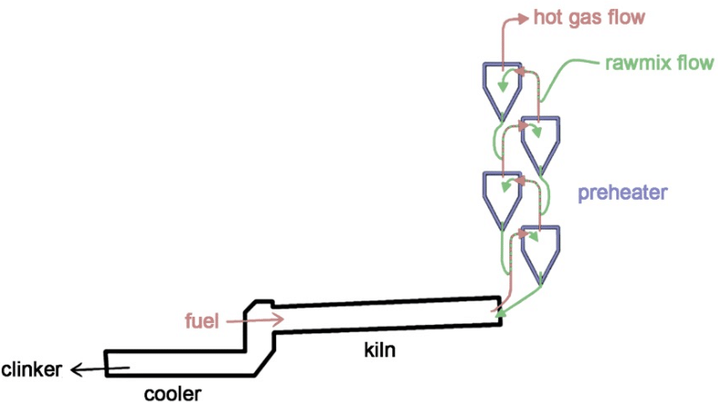

Prediction of Probability of preheater blockage
- Background
- Problem Statement
-
We need to provide the probability of blockage and features which are responsible for the blockage at any given time, so that they can control and minimize the risk of the blockage.
- Data
- Temperature and pressure were measured in each of the 4 cyclones with the help of temperature and pressure sensors every minute(3 temperature sensors and 3 pressure sensors in each cyclone).
- Laboratory data which is the percentage of chemical constituents of the raw materials were measured at the input of the preheater, in the 4th cyclone and at the output stage of the preheater taken every hour.
- Data about Fuel used for burner(coal in tons per hour,tyre),fans used for cooling were recorded.
- Blockage data(Timestamp information of the blockage) for the previous 18 months which is used as the target feature(44 blockages were reported in the last 18 months).
- Approach
- Data Preprocessing: Some of the column names which were in German language were converted to English, Unwanted characters present in the data were cleaned and data types were made appropriate.
- Sensor data which was available for every minute was resampled to hourly data and merged with the laboratory data which was already available for every hour. Now all the independent variables are available in the required format.
- Blockage data was merged with the above data. This is will be used as target feture.
- With EDA we found out that there were some fluctuations in independant features before six hours of blockage. So all the data before six hours were labelled as blockage data(labelled as 1). So, now we have the target feature ready.
- The imbalanced data was balanced using the SMOTE Technique.
- Number of independant features were reduced from 220 to 40 with the help of EDA, domain knowledge, and Recursive Feature Elimination Technique.
- Used the SHAPASH library to provide the feature importance for every prediction.
- Building classification models by using decision tree, random forest, ADA boost, Gradient boost, Voting classifier, XGboost.
- Model evaluation by using various classification metrics like precision, recall, accuracy, f1 score, ROC, AUC.
- Building a complete machine learning pipeline which includes data preprocessing, feature extraction and model building.
 Preheater is an important stage in a cement manufacturing process, where the raw material from the previous stage(Vertical Roller Mill) which is the powdered material(mixture of clay and limestone) will be fed to the preheater inorder to remove the volatile impurities.
Preheater consits of 4 cyclones and is heated from the bottom using a burner(coal/tyre as fuel). Hot air passes from bottom of the preheater to the top, whereas the raw material will flow from top to the bottom through 4 cyclones(C1,C2,C3,C4), different impurities will evaporate at different temperatures.
Gradually these chemicals form a sticky material and get attached to the walls of the cyclone,and finally it will result in the blockage of the preheater. If the preheater gets blocked, the entire manufacturing process should be stopped,and the preheater should be cleaned.This will impact the manufacturing process.